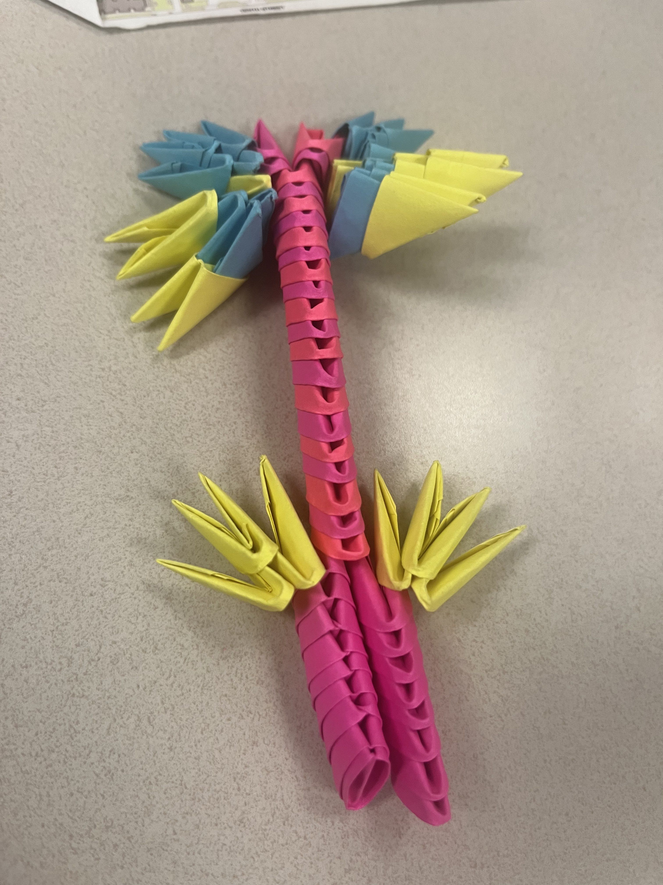
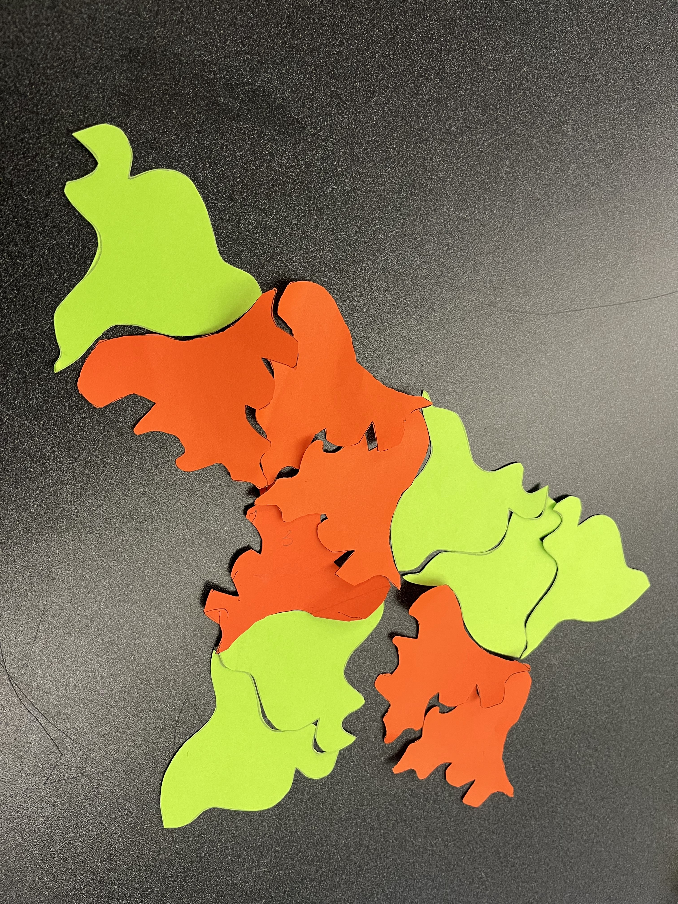

Henry Blackwell Tessle Mod Assignment 3
Phase 1
Exercise 1
For the first complex pattern, I chose this picture because it was extremely simple and reminded me of a parking lot that is packed full of cars. For the 2nd complex pattern, I chose this one because it was a lot like what one would see underneath a microscope. The first tesselation pattern was very striking to me and made a really interesting pattern. For the 2nd tesselatino pattern, I thought it was interesting because it kind of looks like the same pattern you would see on a quilt.
This is a complex pattern made using Ghost Diagrams

This is the 2nd complex pattern made using Ghost Diagrams

This is a tesselation pattern made using Ghost Diagrams

This is the 2nd tesselation pattern made using Ghost Diagrams

Exercise 2
I think the possibilities of modular origami is amazing as it’s almost endless while using such a simple shape. I saw people creat simple animals to dragons and other crazy creatures. My group had issues creating a comlex piece because we were not able to meet up together a lot and we were both extremely busy. Our final product was, in my head, a fantasy world stickbug like creature. Unfortunately, a lot of my pieces were not used as we could not attach them in time. My pieces were the yellow and blue ones.
This is the modular origami
This is the 2nd modular origami

Exercise 3
As my group was made of only 2 people, we were luckily enough to not have to worry about having too many shapes with the same side. Our common shape ended up being a wave like one as it was very simple but still allowed for interesting possibilities. For myself, a problem I had was making the shape interesting, but I like to think I succeeded in that. I wish I had went with a different shape because I wanted to be able to flip the triangles more ways and have them still connect. When we combined shapes, mine kept ending up in a circular form. The limitations of my partner and I choosing to go with a triangle as the base shape was that it wouldn’t be able to spread out as much as we wanted.
This is the papercut tesselation
This is the 2nd papercut tesselation


{kind=link}
{kind=link}
{kind=link}
{kind=link}
{kind=link}
{kind=link}
{kind=link}
{kind=link}